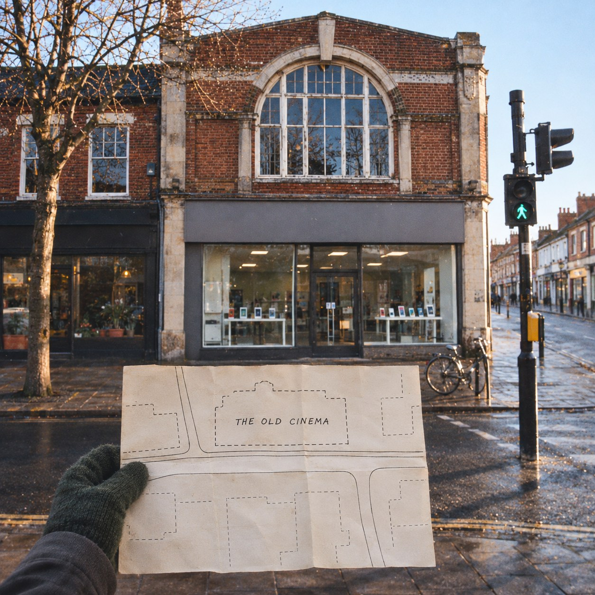
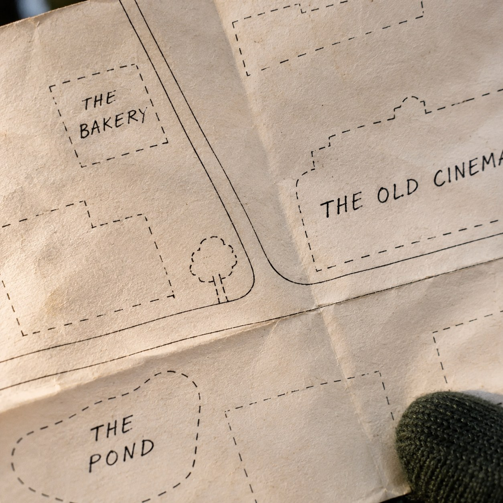

Left at the Old Cinema


"Go down past where the bakery was, and turn left at the old cinema. You can't miss it."
Every town gives directions like this. The bakery closed years ago. The cinema is a phone shop now, and was a bank and a carpet warehouse in between. Ask anyone who has lived here long enough, and the way still runs through them.
So I asked. For a month I stopped people on the high street, asked the way to places, and wrote down every landmark they gave me that was no longer there. This map is drawn from nothing else. A pond that was filled in. A dairy, a school, a chestnut tree that came down in a storm. Each one sits in dashed outline where it stood. Everything still standing is left out.
It is the town people carry, the one they walk through in their heads while their feet walk the other.
And it has a strange flaw. It only works for those who do not need it. A visitor holding it on the corner sees a phone shop and a label that says THE OLD CINEMA, and cannot make the two agree. Someone born here would give the same directions with their eyes shut.
Jorge Luis Borges wrote of an empire whose mapmakers drew a map as large as the empire itself. Later generations found it useless and left it to the weather, and its torn pieces lay in the western deserts, sheltering animals and beggars. That map outlived its use. Here it is the other way round. The use has outlived the town.
Luis Camnitzer once made a room with no furniture in it, only the names of furniture written on the walls and floor, and let the visitor furnish it. A town does this to itself without anyone deciding. Each time someone says left at the old cinema, the cinema is built again for a moment, in the space between two people on a pavement. Then the lights change, and they cross.